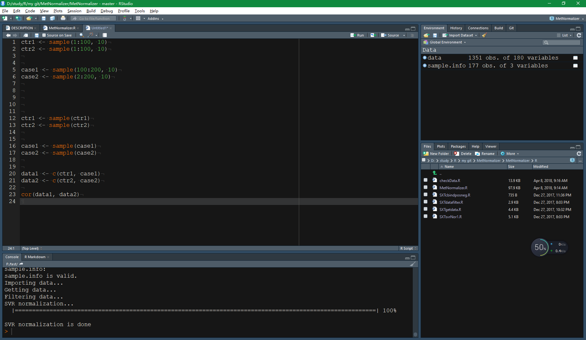
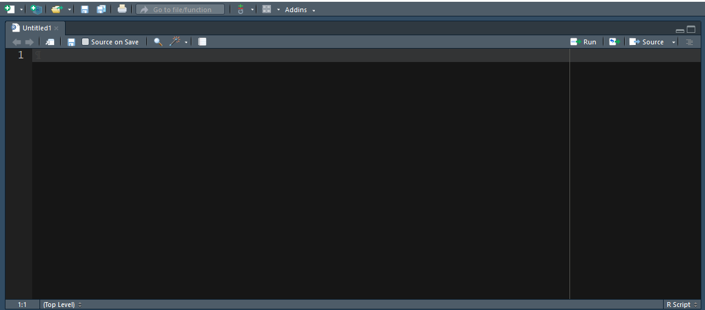

俗话说，工欲善其事，必先利其器，R语言就有这么一件利器。很多第一次接触R语言的人，无不被R语言自带的IDE（集成开发环境）逼疯，甚至望而却步，对R语言好感尽失。虽然也有其他的IDE出现，但是不得不说，Rstudio的出现，大大拯救了那些在R语言苦海学习中的人。Rstudio是美国Rstudio公司开发的，界面简单，炫酷，实用，是R语言学习使用的利器。下面简单介绍一下怎么安装Rsudio，后面会再陆续介绍一些Rstudio的其他知识。
1. 首先，需要安装R语言.
已安装的可以直接跳过该步骤。直接在R官网上下载最新版本，选择中国的镜像，比如清华大学(https://mirrors.tuna.tsinghua.edu.cn/CRAN/),然后选择适合自己系统的包，下载安装即可。

2. 然后安装Rstudio。
到Rstudio官网，选择适合自己系统的Rstudio包，下载，然后安装即可。

3. 安装完成之后，即可打开Rsudio。Rstudio界面如下图所示。

Rstudio一共有四个panel，其中左上角为source，是打开自己脚本以及文件的窗口。左下角为Console，也就是控制台，是直接输入代码的地方，输入代码之后，直接回车，就会返回运算结果。右上角为显示你的环境变量，输入历史，以及其他功能，如编译包，github代码控制等窗口。有下家为显示文件以及图片的窗口。
4. Rstudio的简单使用。
创建R脚本，直接点击左上角的绿色加号，选择R script，即可创建一个R语言脚本。

创建好的脚本是没有名字的，默认为Untitled1。

然后就可以在这里面写入脚本，代码。
到现在为止，就学会了Rstudio的安装和简单使用。后面，我们会有一篇文章再来详细介绍Rstudio的使用。
如果你想学习R语言的使用以及与任何组学相关的只是，请关注我们。如果有任何问题，请给我们留言或者发送邮件，omicschina@163.com，也可以加入我们的QQ群，182971123和我们交流。